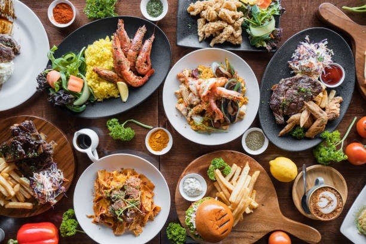

Food is any substance consumed to provide nutritional support for an organism. Food is usually of plant, animal, or fungal origin, and contains essential nutrients such as carbohydrates, fats, proteins, vitamins, or minerals
Pizza is an Italian dish typically consisting of a flat base of leavened wheat-based dough topped with tomato, cheese, and other ingredients, baked at a high temperature.
A small pizza is sometimes called a pizzetta. A person who mkes pizza is known as a pizzaiolo. Margherita pizza is a classic option topped with fresh tomatoes, basil, and mozzarella.